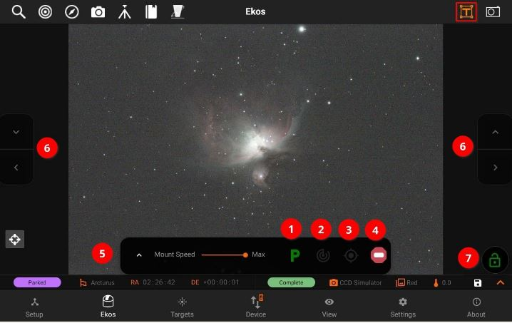
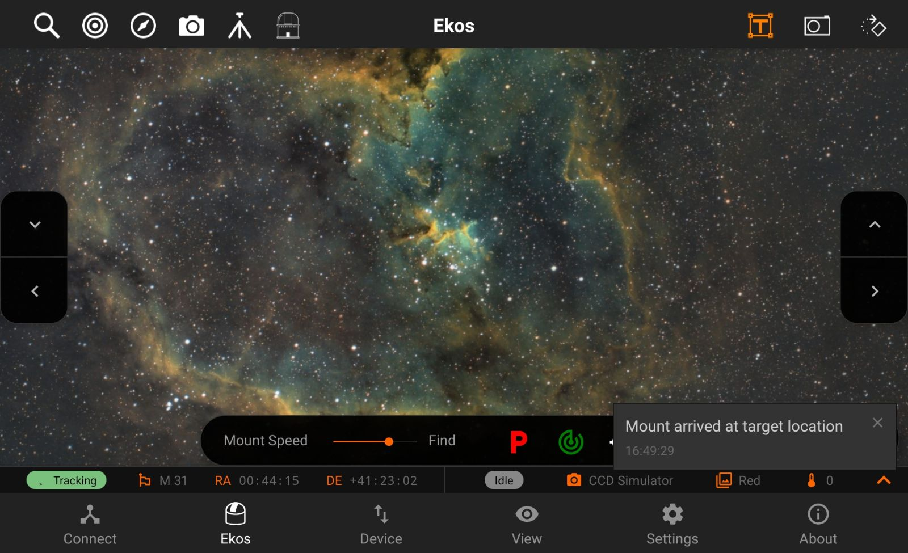
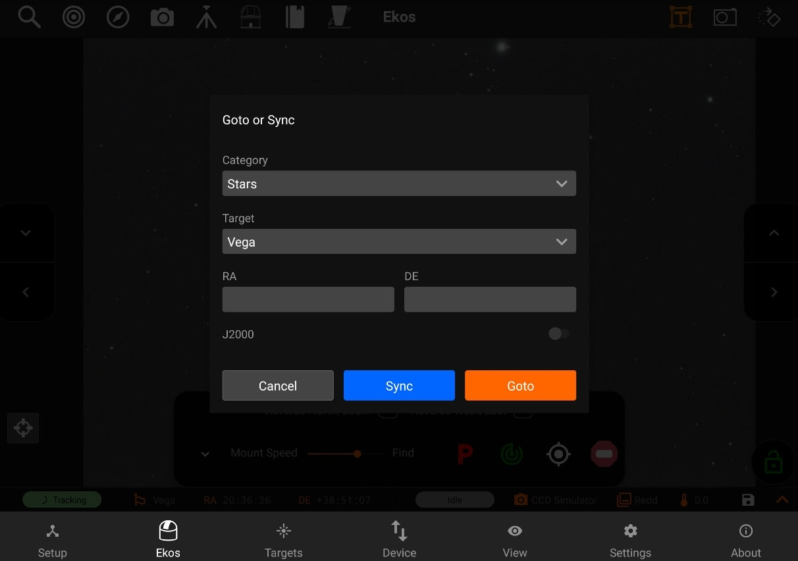
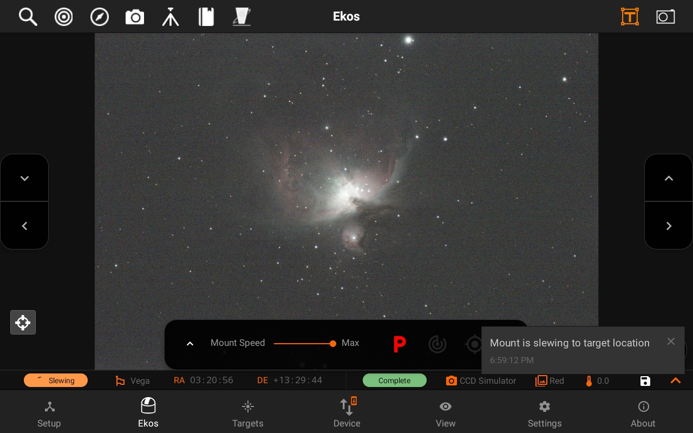
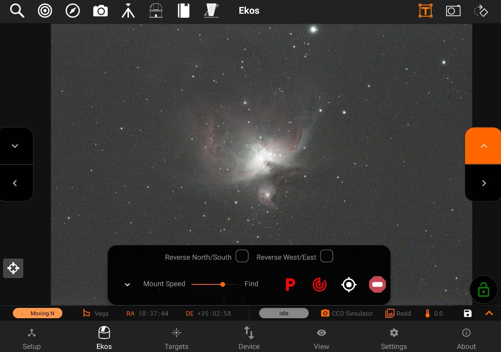
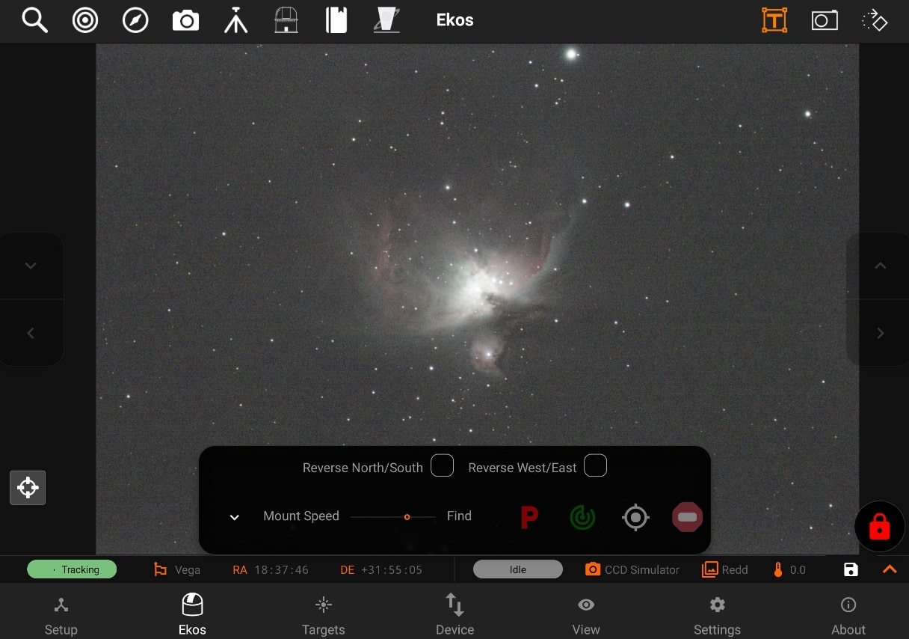
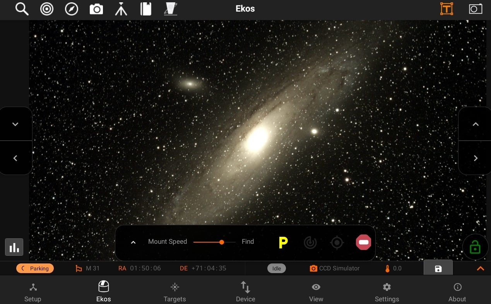
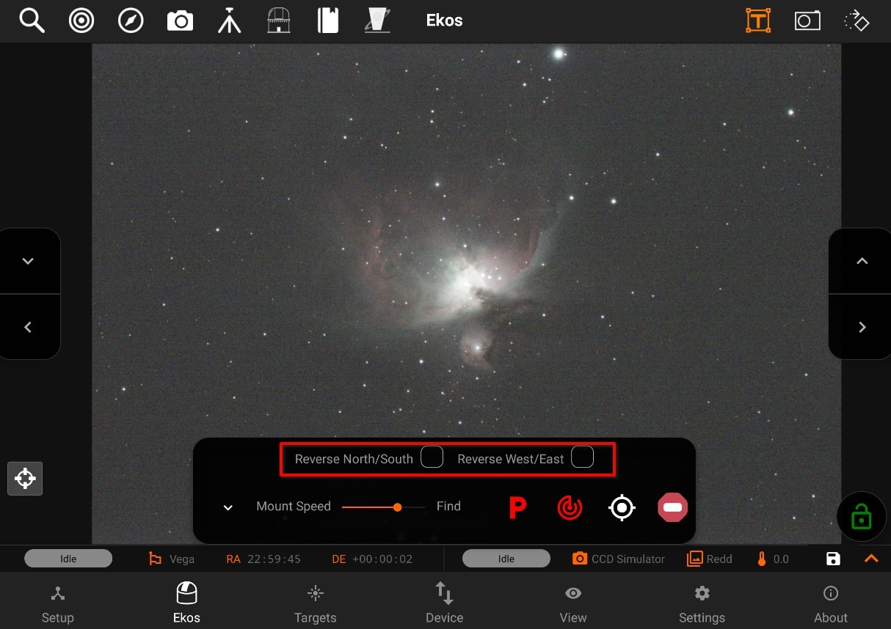

Mount
Mount quick controls allows you to control your mount quickly and easily, it has the following features:
- Park/Unpark: Park or Unpark mount.
- Tracking On/Off: Toggle Mount tracking.
- Goto/Sync: Send a GOTO or SYNC command to the mount using a target or a position.
- Abort: Immediately abort any mount motion
- Mount Speed: Select mount speed when moved via directional keys. Numeric rates (e.g. 600x) usually indicate speed 600 times the sidereal tracking speed. This only affects speeds for manual motion via directional keys and does not change SLEW/GOTO speeds.
- Controls: Buttons from which you can move your Mount
- Left/Right/Up/Down: Move your Mount towards specific directions.
- Lock Mount Controls: Disable the Mount Controls
Unparking Your Mount
To unpark your mount, tap on the greenbutton, it should turn red signifying that the mount is now UnParked, and the mount status bar shows Idle.

Tracking On/Off
For mount that support tracking control, you can toggle tracking by clicking on button. If tracking is engaged, the icon turns to green and the mount status bar will show Tracking.

Goto or Sync
You can goto or sync by clicking on the GOTO button, a dialog will pop-up where you can goto or sync to your last target, choose one of your last recently used targets, or select and category and choose a new target.


Moving to a specific direction manually
You can move your mount to a specific direction manually by using the Directional pads on the left and right side of the screen.

Locking Mount Controls
You can lock mount controls using the Lock button on the bottom-right of the screen. This will disable all the controls, and can be used to avoid any accidental touches.

Parking Your Mount
You can park your mount by clicking on the redbutton, this will turn the button to the yellow color while Parking your mount. After it is done parking, the button will turn to the color green, showing Parked status in the mount status bar.

Reverse Directions:
You can reverse the directions of your mount:
- North/South: Mount directions will be reversed for North/South when enabled.
- West/East: Mouth directions will be reversed for West/East when enabled.
